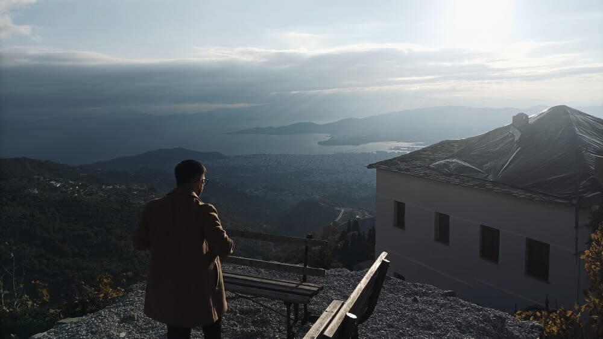

About Me
I was born in Athens and currently live in Larisa, where I study Computer Science. My interests span across network engineering, IT infrastructure, and hardware troubleshooting. I love learning how things work — whether it’s configuring a network, upgrading a PC, or soldering a circuit to bring something back to life. My long-term goal is to become a Network Engineer or Systems Administrator, designing efficient, secure, and scalable systems. Outside of my studies, I like experimenting in my home lab with testing network setups, and exploring new technologies that connect devices and people.